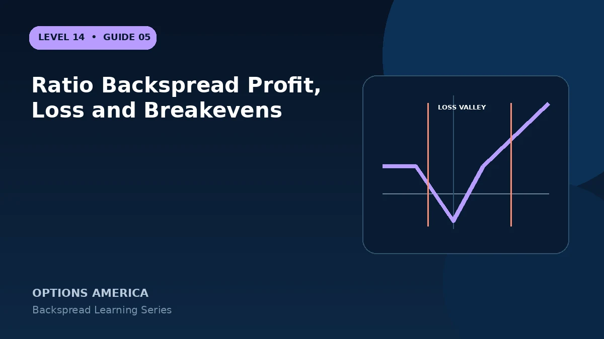

Calculate the expiration credit or debit result, maximum-loss zone and far-move breakeven of a 1-by-2 backspread.
Quiet-side result
Below both call strikes or above both put strikes, all options expire worthless. A net credit is retained; a net debit becomes the loss. This is the backspread's flat quiet-side outcome.
Maximum loss
At the long-option strike, the short option has intrinsic loss equal to the strike width while the long options have no intrinsic value. Offset that amount by the opening credit or debit.
Far breakeven
For a credit call backspread, upper breakeven is long strike plus strike width minus credit. For a credit put backspread, the lower breakeven is long strike minus strike width plus credit.
Beyond breakeven
Two long options change value against one short option, leaving one net long option. Call upside is uncapped; put downside is limited only by the underlying reaching zero.
A practical example
A 100/105 1-by-2 call backspread entered for a $0.20 credit has $480 maximum loss at $105 and an upper breakeven near $109.80 before costs.
This simplified example focuses on selected expiration outcomes; live prices and risks will differ. Live option prices also reflect the underlying price, time decay, rates, dividends, liquidity and transaction costs. Greeks are theoretical estimates, not guarantees.
Turn the payoff into a trading plan
Before entering ratio backspread profit, loss and breakevens, write down the stock price, both strikes, expiration, contract ratio and total opening credit or debit. Then calculate the quiet-side result, maximum loss at the long-option strike and the far-move breakeven. These three checkpoints make the position easier to monitor and help prevent the attractive tail payoff from hiding the loss valley.
Test at least five scenarios: no move, a move to the short strike, a move to the long strike, a move to breakeven and a move well beyond breakeven. Repeat the exercise with implied volatility higher and lower and with less time remaining. The resulting range is more useful than a single payoff line because a live backspread can change substantially before expiration.
Finally, define the catalyst, maximum acceptable loss, review date and closing method in advance. Use one multi-leg order whenever possible, confirm every fill and recalculate the remaining position before changing any leg. Assignment, liquidity and transaction costs belong in the plan even when the expiration loss appears defined.
Frequently asked questions
Why can it have two profitable regions?
A credit can profit on the quiet side and again after a large move.
Are formulas identical for debit entries?
No. Include the debit with the correct sign.
Do commissions matter?
Yes, three contracts are opened and closed per unit.
Continue the Backspread Strategies cluster
Explore related guides: Ratio Backspread Example With Full Payoff Scenarios · Backspread vs Ratio Spread · How to Adjust and Close a Ratio Backspread. For a structured sequence, use the free Level 14 – Backspread course.
Options involve risk and are not suitable for every investor. This material is educational and is not investment, tax or legal advice. Greeks are theoretical estimates, and contract terms and broker requirements can vary.